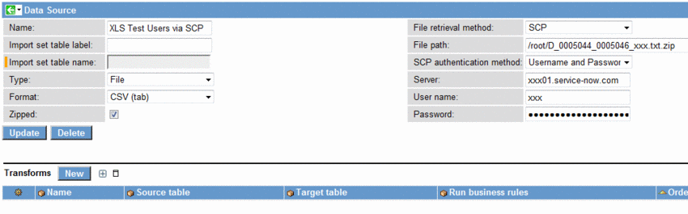

Data Sources
| |
Note: This article applies to Fuji. For more current information, see Data Sources at http://docs.servicenow.com
The ServiceNow Wiki is no longer being updated. Please refer to http://docs.servicenow.com for the latest product documentation. |
1 Overview
Data Sources is a module of the Import Sets application. Data sources are used to create an import set so that data can be processed, if necessary, prior to being mapped onto a production table. The data source type describes the origin of data:
- File: Data is in a recognized file format, accessible locally or remotely through several file retrieval methods
- JDBC: Data is in a database, accessible using JDBC. We currently support Oracle, MySQL, MS SQL Server, Sybase and DB2 drivers.
- LDAP: Data is in an LDAP server, accesible through the LDAP or LDAPS ports, 389 and 636 respectively.
| |
Note: When using import sets to map data from one ServiceNow table to another, it is not necessary to define a data source, rather this can be done simply by using the import set mapping tools. Importing Sets will skip records when the data in the instance matches the data being imported. For instructions on creating transform maps, see Creating New Transform Maps. |
2 File Types
You can import a file from a local source, a remote network server, or another instance by providing a path and authentication information. For file type import sets, you can select from a list of different file retrieval methods, including FTP, FTPS, SCP, and HTTPS.
| 
{kind=link}
When you select a data source of type File, the following fields are displayed:
| Field | Description |
|---|---|
| Name | Unique name of this data source. |
| Import set table Label | A label is a tag on a piece of data. Labels are logical, descriptive names that are localizable. |
| Import set table name | ServiceNow uses the label you entered to construct a unique table name. This prevents namespace collision with an already existing table. |
| Type | Select File from the drop-down list. |
| Format | Select one of the following formats from the list: CSV, CSV (tab), Excel, XML. |
| Zipped | Select this check box if the import file is compressed. |
| Xpath for each row | XPath expression which selects the nodes which are to become rows in the import table. The children of the selected nodes will become the columns in the rows. |
| Expand node children | if an element which is to become a column contains further child elements, should these be converted into additional columns, or should the column value be an XML fragment? |
| File retrieval method | Choose the appropriate retrieval method for this file. See File Retrieval Methods for details. |
| File path | Enter the path to the import file. |
| SCP authentication method | Select to authenticate with a Username and Password or with a Public key.
Note: You cannot authenticate to data sources with a public-private key pair. Use username/password authentication instead. |
| Server | Enter the name of the server from which the file will be imported. |
| Port | Enter the port to use to connect to the specified server. This field appears if you select HTTP or HTTPS as the file retrieval method (available starting with the Fuji release.) |
| User name | Enter the user name for authentication on the file server. |
| Password | Enter the password for authentication on the file server. |
| Private keyfile | Note: This is a legacy field for SCP authentication with a public-private key pair. You cannot authenticate to data sources with a public-private key pair. Use username/password authentication instead. |
| System KeyStore | Select this check box to validate the certificate from the FTPS server against all saved certificates. This certificate may be any type supported by the instance. If you do not select this check box, the instance uses the Java default certificate to validate the FTPS server. This field is available only for data sources with a File retrieval method value of FTPS (Auth SSL) starting with the Fuji release. |
Currently ServiceNow supports file imports in XML, CSV (character-separated values) and Excel (XLS) formats.
{kind=link}
2.1 Example XLS data source file
XLS refers to the Microsoft Excel file format. This is the default format for spreadsheets created in Excel for versions 2003 and older. The new XLSX file format that is the default format for Excel 2007 is not currently supported. If importing a list from Excel 2007 then it is necessary to use the "save as" feature and specify XLS format (versus XLSX).
| |
Note: All .xls files must use the 1900 date system as opposed to the 1904 date system as the latter will cause your dates to be imported with a year that is 4 years earlier than what your spreadsheet displays. Refer to MS Support for additional information about date systems. |
{kind=link}
2.2 Example XML data source file
XML data source definitions have an additional field to specify the "XPath for each row". This is an XPath expression to select the elements whose children will be converted to rows in the import set table. Each selected element will cause a row to be created in the import set table. The children of the selected element will be converted into columns in the row. For example, to import the asset information from the sample XML file below, the XPath expression should be specified as "/export/asset". This expression matches the 3 <asset> elements in the file, so 3 rows will be created. Although one could also specify "//asset" this expression is much less efficient for large files.
| |
Note: It is strongly recommended that you use the absolute location path form for XPath expressions when using the XML loader. Avoid expressions containing "//" unless strictly necessary. |
Ensure you specify a sufficiently restrictive XPath expression with a large XML file. For example, the expression "/export" would be wrong for the sample file below, since it matches the document (root) element. In general, you should never specify an XPath expression which matches the root element unless you want everything in the document to be made into a single row. Specifying an insufficiently restrictive XPath expression when attempting to load large XML files could result in lengthy processing times and incorrect output. For this reason, it is best to test and debug XML data source specifications with small XML files containing only a few rows worth of data. Once the specification has been tested, you can run it again with the full file.
The <userInfo> elements contained within <asset> contain child elements. This will cause a column called userInfo to be created containing XML for the userInfo element. If Expand child nodes is checked, individual columns will also be created for userInfo/lastName and userInfo/firstName. If Expand child nodes is not checked, only the userInfo XML column will be created.
Note that when loading data from an XML file, ServiceNow samples the first 10 records to determine what fields are required to hold the data. If none of the first 10 records specify a value for a field, ServiceNow does not add that field to the table that holds the imported data. Ensure that at least one of the first 10 records species a value for any fields being imported.
<?xml version="1.0" encoding="utf-8"?>
<export>
<asset>
<assetTag>AT-01939</assetTag>
<type>Desktop</type>
<os>Windows 7 Professional</os>
<lastlogondate>12-07-2010 12:31:24</lastlogondate>
<userInfo>
<lastName>Loo</lastName>
<firstName>David</firstName>
</userInfo>
<isenabled>true</isenabled>
</asset>
<asset>
<assetTag>AT-53480</assetTag>
<type>Desktop</type>
<os>Windows 7 Professional</os>
<lastlogondate>09-07-2010 13:25:53</lastlogondate>
<userInfo>
<lastName>Merritt</lastName>
<firstName>Norris</firstName>
</userInfo>
<isenabled>true</isenabled>
</asset>
<asset>
<assetTag>AT-55782</assetTag>
<type>Desktop</type>
<os>Unknown</os>
<lastlogondate>01-01-1900 00:00:00</lastlogondate>
<userInfo>
<lastName>Currie</lastName>
<firstName>Mike</firstName>
</userInfo>
<isenabled>true</isenabled>
</asset>
</export>
2.3 Example CSV data source file
CSV, character-separated value files are used as a cross-compatible file format for transferring files across platforms. A CSV file is a text file that define a grid, where columns are defined by commas and rows are defined by line breaks. For the purpose of defining precise spacing for Importing strings quotes can be used as wrappers, but they are not necessary.
"user_name","name","email","sys_created_on","active" "jared.laethem","Jared Laethem","jared.laethem@yourcompany.com","2008-02-24 22:21:32","true" "jerrod.bennett","Jerrod Bennett","jerrod.bennett@yourcompany.com","2007-08-12 12:12:18","true" "eric.schroeder","Eric Schroeder","eric.schroeder@yourcompany.com","2007-07-03 11:50:20","true" "rob.woodbyrne","Rob Woodbyrne","rob.woodbyrne@yourcompany.com","2007-07-03 11:49:57","true" "admin","System Administrator","admin@yourcompany.com","2007-07-03 11:48:47","true" "christen.mitchell","Christen Mitchell","christen.mitchell@yourcompany.com","2007-05-16 15:26:42","true" "rob.phillips","Rob Phillips","rob.phillips@yourcompany.com","2007-01-22 11:25:34","true" "davin.czukowski","Davin Czukowski","davin.czukowski@yourcompany.com","2006-07-11 14:01:26","true" "luke.wilson","Luke Wilson","luke.wilson@yourcompany.com","2006-02-07 15:29:48","true" "bow.ruggeri","Bow Ruggeri","bow.ruggeri@yourcompany.com","2005-07-07 11:39:58","true" "don.goodliffe","Don Goodliffe","don.goodliffe@yourcompany.com","2005-05-02 12:28:40","true" "david.loo","David Loo","david.loo@yourcompany.com","2005-02-22 16:00:00","true" "guest","Guest","guest@yourcompany.com","2004-05-01 17:00:00","true" "fred.luddy","Fred Luddy","fred.luddy@yourcompany.com","2004-05-01 17:00:00","true"
To process CSV files that are delimited by any character other than a comma:
| |
Note: This is an advanced step to create a CSV import. Normally, you would upload the data and import it directly using System Import Sets, which will create this CSV data source for you automatically. |
- Create the data source using one of the following methods:
- Click New on the Data Source list.
- Create the data source using the Attachment file retrieval method.
- Attach the CSV file to this data source.
- Configure the Data Source form and add the CSV Delimiter field.
- Type the character you want as the delimiter for the CSV file in this field.
- For example, you might use the pipe symbol ( | ).
- Test load the data source.
- The CSV loader will parse the CSV file, expecting it to be delimited (separated) by "|".
{kind=link}
2.3.1 Encoding
The default character set used for decoding the imported CSV file is WINDOWS-1252. It may become necessary to use a specific type of encoding such as utf-8 when importing a CSV document. This can be done within a data source using the properties field. To use utf-8 encoding when importing a CSV file as an attachment:
- If the 'Properties' field does not exist on your Data Source form, configure the form and add it.
- We add this property in the following format 'charset=<your encoding type>' (i.e. charset=utf-8).
Refer to the picture below to see what this data source would look like with this property added:

3 File Retrieval Methods
After defining the files that are compatible for importing, the next configuration step for the file data source is to define how the file can be imported. The following file retrieval methods are available to copy the file from where it resides to ServiceNow to be loaded into an import set.
| |
Note: For the import to succeed, your FTP server and client must be set up for the same authentication mechanism that you select here. Refer to the following article for an explanation of the protocols support http://en.wikipedia.org/wiki/FTPS |
| Method | Description |
|---|---|
| Attachment | Attach a file to the record and import that file in an import set. |
| File | Select a file to import from a local drive or, less commonly, a network location. Selecting this method provides a field to specify the network path. Only these file locations are available, for increased security.
If you need to specify an arbitrary network path, consider using a different file retrieval protocol such as FTP or SCP where you can secure the communications channel. |
| SFTP | Retrieve a file using SFTP. Fields are provided for the server name and logon credentials. |
| FTP | Retrieve a file from an FTP server in your network. Fields are provided for the server name and logon credentials. |
| FTPS (Auth SSL) | An FTP Secure authentication command issued through the Secure Socket Layer (SSL) protocol. This method is also known as explicit FTP over SSL. |
| FTPS (Auth TLS) | An FTP Secure authentication command issued through the Transport Layer Security (TLS) protocol. This method is also known as explicit FTP over TLS. |
| FTPS (Implicit SSL) | In implicit security, the FTPS server defines a specific port for the client (990) to use for secure connections. Implicit security automatically begins with an SSL connection the moment an FTPS client connects to an FTPS server. |
| FTPS (Implicit TLS) | In implicit security, the FTPS server defines a specific port for the client (990) to use for secure connections. Implicit security automatically begins with a TLS connection the moment an FTP client connects to an FTP server. |
| HTTP | Retrieve a file using HTTP. FIelds are provided for the server name and logon credentials. |
| HTTPS | Retrieve a file using HTTPS. Fields are provided for the server name and logon credentials. Use this method to transfer data between ServiceNow instances. |
| SCP | The Secure Copy protocol (SCP) securely transfers files between a local and a remote host or between two remote hosts, using the Secure Shell (SSH) protocol.. |
3.1 FTP Extended Properties
The following table describes properties that are available for customizing your FTP data source. To enter these properties, you must configure the layout of your data source form, and add the Properties field. When you specify more than one property, be sure to use a comma "," to separate them.
| Property name | Description | Example value | Data Source |
|---|---|---|---|
| connection.passive | Sets the behavior for the FTP connection to establish a passive connection. Defaults to true starting with Calgary Patch 7, Dublin Patch 4, Eureka Patch 3 Hotfix 1, and Fuji or false in older versions. | connection.passive=true | FTP, FTPS |
| connection.timeout | The number of milliseconds to wait before timing out the FTP connection attempt. Defaults to 10 seconds. | connection.timeout=10000 | FTP, FTPS |
| remove_file | When this value is set to true, the remote file will be deleted after the import. Defaults to false, or don't remove. | remove_file=true | FTP, FTPS, SFTP |
| rename_file | When this property is set to true the remote file will be renamed to "<file name>.imported". Defaults to false, or not to rename file. | rename_file=true | FTP, FTPS, SFTP |
4 JDBC Types
A JDBC data source is a data source that retrieves its data via a JDBC driver (usually type 4 'network'), and has a requirement that the JDBC connection is available either directly from the ServiceNow instance (a VPN setup required), or via a MID Server installed inside your firewall that can access the database port. Note that any JDBC call from the MID server is never encrypted. Limit the rights available to the MID user whenever making JDBC calls from a MID server.
JDBC connections are supported for the following databases:
| SQL Server Type | Port |
|---|---|
| MySQL | 3306 |
| MS SQL Server | 1433 |
| Oracle | 1521 |
| Sybase | 5000 |
| DB2 Universal | > 50000 |
A data source record for a JDBC connection looks like this:
{kind=link}
| |
Note: Oracle DATE fields will be loaded as ServiceNow datetime fields. |
The following fields are available when you select a JDBC connection:
| Field | Description |
|---|---|
| Name | Unique name of this data source. |
| Import set table Label | A label is a tag on a piece of data. Labels are logical, descriptive names that are localizable. |
| Import set table name | ServiceNow uses the label you entered to construct a unique table name. This prevents namespace collision with an already existing table. |
| Type | Select JDBC from the drop-down list. |
| Use MID Server | Select a MID Server to use to connect to this data source. |
| Format | Select one of the following formats (databases) from the list:
† Instances on Calgary Patch 2 or later can connect to Microsoft SQL Server 2012 but not Microsoft SQL Server 2000. Instances on earlier versions can connect to Microsoft SQL Server 2000 but not Microsoft SQL Server 2012. |
| Instance name | To ensure connectivity, provide the instance name for a SQL Server that receives a new port number dynamically after each reboot. This field only appears when SQLServer is selected as a data source format. |
| Database name | Type the name of the database instance. |
| Database port | Type the port number for the database. |
| Use integrated authentication | Select this check box to allow the JDBC connection to use the ID of the user configured for the Windows MID Server service for SQL Server authentication. For additional details, see SQL Server Integrated Authentication for Windows. |
| User name | Type the user name for authentication on the database server. The user name provided for the JDBC connection must be associated with an account on that database server; it cannot be a Windows Domain account. |
| Password | Type the password for authentication on the database server. |
| Server | Type the name of the server from which the data will be imported. |
| Query | Select the type of query to run: All rows from Table or Specific SQL. If you select to run a SQL statement, the SQL statement field appears. |
| Query timeout | Specify the number of seconds the JDBC driver will wait for a query (SELECT) to complete. Zero means no timeout. If timeout is exceeded, the integration considers the JDBC result inaccessible and places it in an error state. |
| Connection timeout | Specify the number of seconds before MID Server connection cache pool closes and removes it from the pool. Zero means no timeout. |
| Table name | Type the name of the source table or view from which the data is being exported. |
| SQL statement | Type a SQL statement to extract the desired data from the database. |
| Use last run datetime | This selection controls the amount of data that is retrieved from a database during an import run. If this check box is unselected, then all rows in the table specified are imported, every time. You might want to use this setting if this is a one-time import, or if all the data in the target table is new. If this check box is selected, two additional fields appear, enabling you to select a datetime value to limit imported data to delta values only. |
| Last run datetime | The datetime value in this field is automatically populated from the database field you select below and represents the latest value from the previous run. This value acts as a dynamic filter to restrict the number of records retrieved to those records that have changed since the data source's last runtime. |
| Last run database field | Select the field name from the source table or view that will be used as the filter in the next run. This value may need to be case sensitive depending on the target database type. |
| Additional Database Parameters | Optional parameters to add to the end of the URL generated for this data source. Enter a semicolon-separated list of parameters. You may need to configure the form to view this field. This field is available starting with the Fuji release. |
4.1 SQL Statement Requirements
JDBC queries that run SQL statements must specify a column name. For example, this query specifies the column name ServerID.
Select Distinct 'server_name:' + CONVERT(VarChar, lg.ResourceID) As 'ServerID'
,LastHWScan
,Account0
,Category0
Fromv_GS_WORKSTATION_STATUSsInner Join
v_GS_LocalGroupMembers0lg
On s.ResourceID = lg.ResourceID
WhereType0 = 'Local'
And Category0 = 'SystemAccount'
4.2 JDBC Connection Settings
You can control how ServiceNow communicates with a JDBC data source by adding the following properties.
| Name | Description |
|---|---|
| glide.jdbcprobeloader.retry | The number of times a JDBC probe loader attempts to process data returning from a JDBC data source. Sleeps on the value defined in "glide.jdbcprobeloader.retry_millis" between retries.
|
| glide.jdbcprobeloader.retry_millis | How many milliseconds a JDBC probe loader waits in between retry attempts to process data from a JDBC data source.
|
5 LDAP Types
| |
Note: It is unusual that you will configure an LDAP data source directly. |
An LDAP data source is automatically created when configuring your instance to integrate with LDAP. For detailed information on integrating LDAP with your ServiceNow instance, see LDAP Integration. A data source record for LDAP looks like this:
{kind=link}
The following LDAP fields are provided:
| Field | Description |
|---|---|
| Name | Unique name of this data source. |
| Import set table Label | A label is a tag on a piece of data. Labels are logical, descriptive names that are localizable. |
| Import set table name | ServiceNow uses the label you entered to construct a unique table name. This prevents namespace collision with an already existing table. |
| Type | Select LDAP from the drop-down list. |
| LDAP target | Select a target from the list of your LDAP OU definitions. |
6 Enhancements
6.1 Fuji
- The glide.outbound.sslv3.disabled system property can disable the SSLv3 protocol for outbound connections.
- The connection.passive FTP extended property has a default value of true.
- The System KeyStore field allows you to validate the certificate sent by an FTPS server using all certificates stored on the instance.
- The Port field field allows you to specify which port to use when connecting to a data source over HTTP or HTTPS.
- The Additional Connection URL Parameters field allows you to add parameters to the end of a JDBC data source URL.